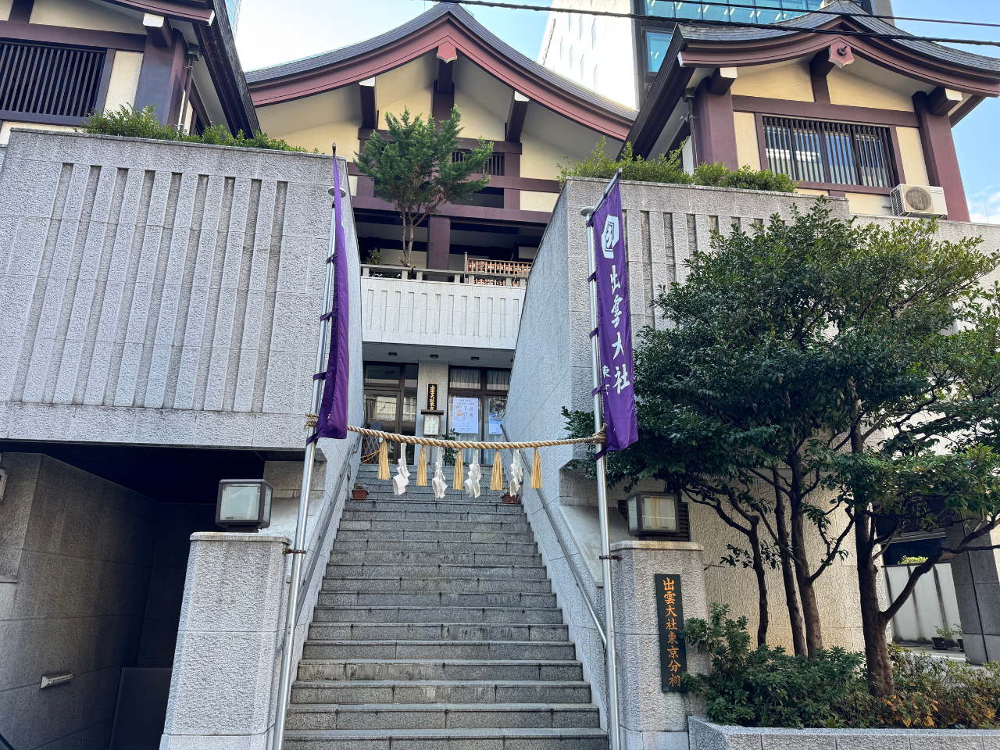
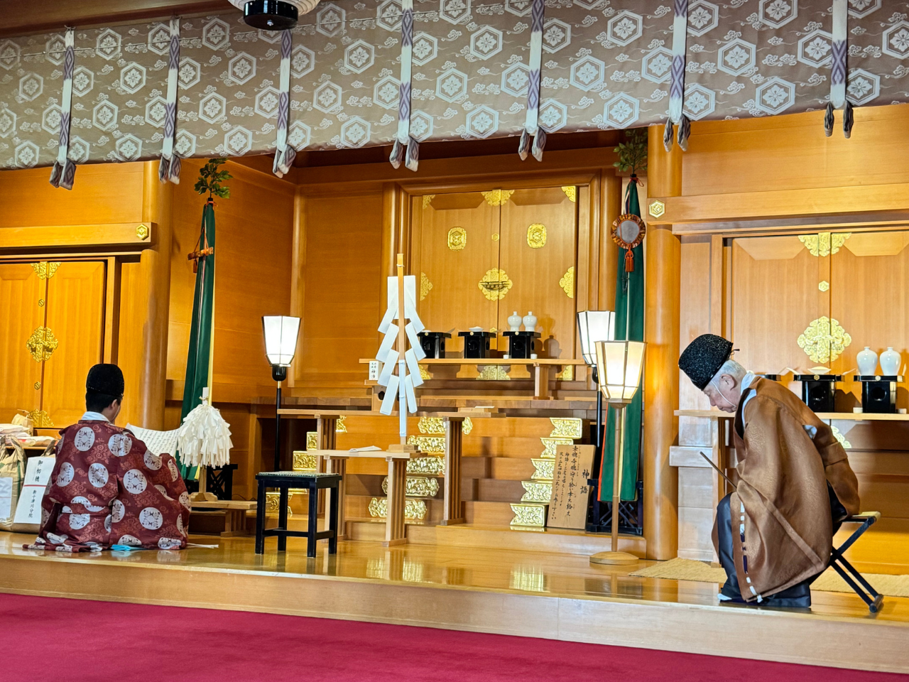

縁結びの神様 出雲大社
ここ六本木の出雲大社東京分祠は出雲大社の御祭神大国主大神の御分霊を奉斎する都内唯一の分祠であり、 東部の要として、第八十代国造、出雲大社教初代管長の千家尊福公によって明治の初期に創設されました。
出雲大社の御祭神、大国主大神（おおくにぬしのおおかみ）は縁結びの神として、広く知られておりますが、 縁結びとは単に男女の縁を結ぶということだけではありません。私どもが立派に成長しますように、 社会が明るく楽しいものであるようにとお互いの幸福のためのすばらしい縁がむすばれるということなのです。
ダイコクさま、福の神として親しまれている大国主大神さまが、多くの方々から広く深い信仰を受けておられるのも この「むすび」という愛情を私どもに限りなくそそいでくださるからです。
当分祠では皆様方が、ダイコクさまの幸せのご縁をいただかれて、 明るく安らかに過ごすことが出来ますよう、日々お祈りいたしております。


東京分祠からのお知らせ
《新着情報》
-
2025.12.25
令和７年 年越の大祓のご案内 -
2025.11.08
令和８年福徳会（ふくとくかい）のご案内 -
2025.10.23
令和７年 神在祭祈念行事のご案内 -
2025.10.17
神語奉書浄書会のご案内 -
2025.09.24
令和７年秋季大祭のご案内 - → 新着情報一覧を見る
基本情報
- 名称 出雲大社東京分祠
- 住所 〒106-0032 東京都港区六本木7-18-5
- 電話 03-3401-9301
- 受付時間 午前9時より午後5時まで
- 御祈祷時間 午前10時より午後3時まで（1時間毎に随時）
-
アクセス
東京メトロ日比谷線 六本木駅 2番出口より徒歩約1分
都営地下鉄大江戸線 六本木駅 7番出口より徒歩約3分